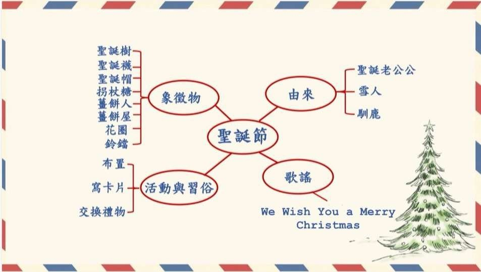
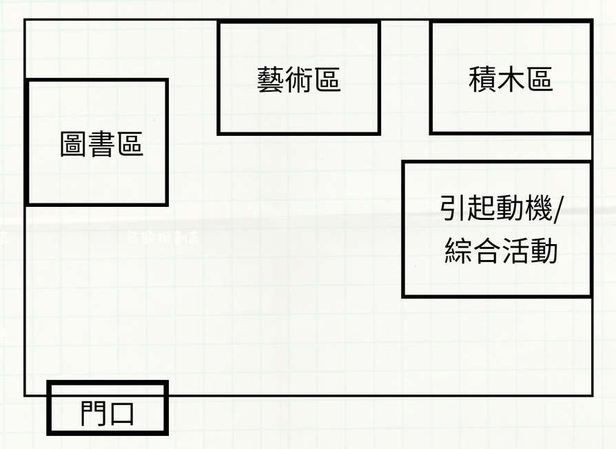
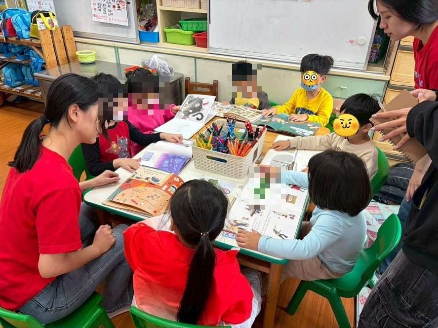
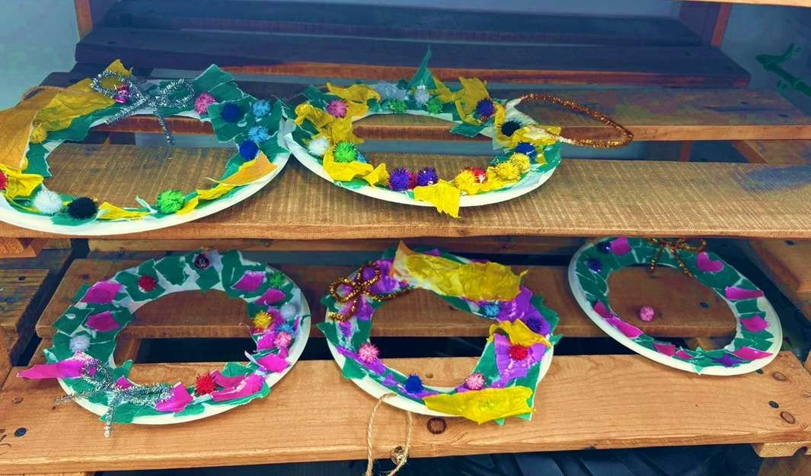
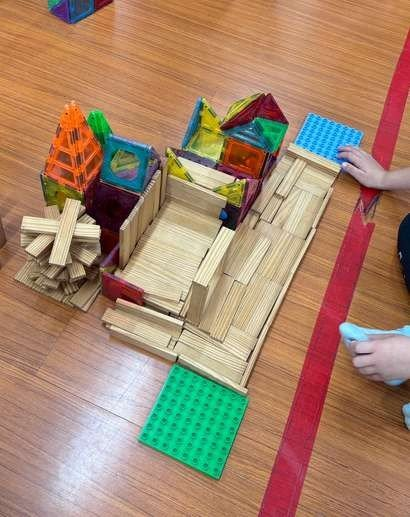
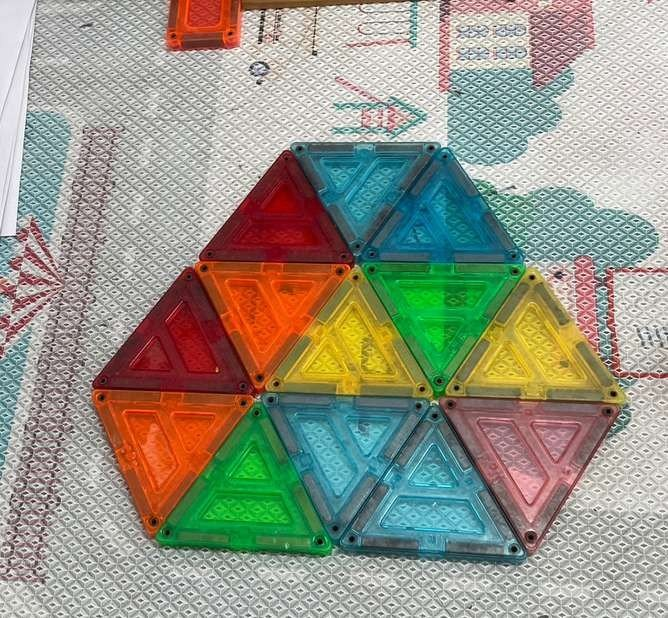
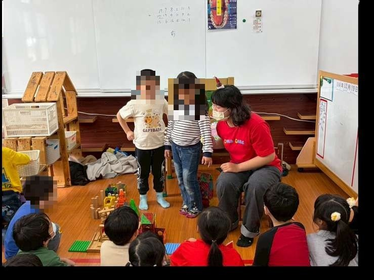
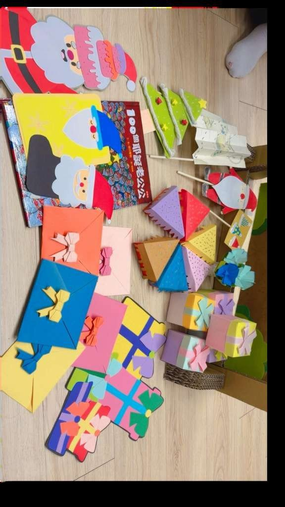
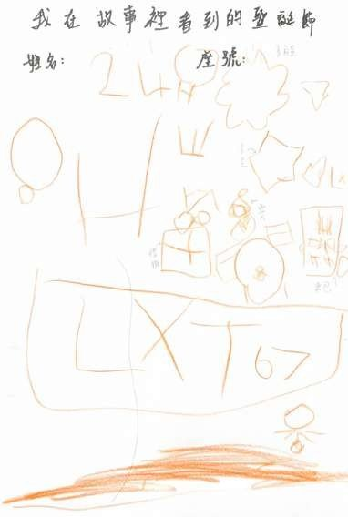

課程目標與學習指標
社-1-6 認識生活環境中文化的多元現象（社-中-1-6-3 參與節慶活動；社-大-1-6-3 樂於參與多元文化的活動）
活動怎麼進行
引起動機
搭配偶台與自製教具說演繪本《100個聖誕老公公》，提問討論：聖誕老公公怎麼準備聖誕節？你們會怎麼過聖誕節？
發展活動｜三學習區
圖書區：讀聖誕繪本，把書裡看到的聖誕節畫在學習單上。藝術區：依步驟圖製作聖誕花圈（撕貼、塗膠、裝飾）。積木區：參考流程圖用多種積木搭建聖誕小鎮。教師平均分配各區人數，聖誕音樂響起即開始收拾。
綜合活動
各區幼兒上台分享：看到什麼聖誕元素？搭了什麼、遇到什麼困難、怎麼解決？
評量怎麼設計
- 各學習區搭配不同工具：圖書區＝軼事記錄＋學習單；藝術區與積木區＝軼事記錄＋拍照＋幼兒自我評量。
- 軼事記錄採三段式書寫：情境描述（活動背景）→觀察紀錄（客觀事實、幼兒原話、時間點）→分析評論（發展解讀），一位觀察者聚焦一位幼兒。
- 自我評量以訪談進行：「你的作品上有什麼？」「有沒有遇到困難？」記下幼兒原答。
評量看見了什麼
- 軼事紀錄捕捉到檢核表看不到的細節：有幼兒會提醒同伴「白膠會黏手」（社會互動）、有幼兒把積木不夠的問題當場想辦法解決（問題解決）、有幼兒說「你幫我畫框框，我塗色就好」（尋求協助的策略）。
- 圖書區的引導語成為關鍵評量情境：幼兒從「我不會畫」到畫出雪地、雪人、禮物、星星——引導前後的差異本身就是發展證據。
- 積木區幼兒能延伸出老師沒教的內容（花園、菜園、停車場），呈現想像力與同儕合作。
教學現場的即時調整
- 介紹學習區時一開始把全班帶進區內、太過擁擠，立即改在團討區介紹。
- 積木區空間不足，部分幼兒移到團討區創作。
- 忘記事先約定收拾訊號，改為分區各自提醒——反思：收拾機制要在活動前建立。
這組的反思
- 繪本與偶台擇一使用即可，同時並用幼兒容易分心；偶台可自成扮演區讓幼兒重演故事。
- 學習區介紹在團討區進行即可，不必帶入各區。
給現場老師的啟示
學習區這種幼兒自選、多線並行的情境，勾選式工具派不上用場——這組示範了軼事記錄的正確寫法：紀錄與評論分離、記幼兒原話、一次聚焦一人。六份紀錄就是六個現成的書寫範本。
現場紀實









